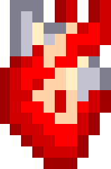

Guia
Manual para aparecer en el paraiso
(Procure hablar con la entidad antes de todo)
Para Iniciar Sesión en el paraiso pulse el boton "Entrar al paraiso".

Para Registrase en el paraiso pulse el botón "Abrazar la Plaga".
Dentro de cada pagina aparecerá un corazón con el nombre Guía el cual te dará informaciónde cada pagina en la que te encuentres PULSALO en caso de no entender como continuar.